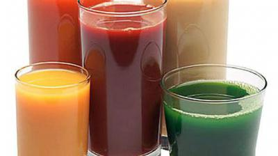

Нектар. Что это такое .

Его обожествляли древние греки. Они приписывали ему свойства, которые омолаживали человека и дарили ему красоту. И ведь, знаете, они были не далеки от истины. В нашем представлении нектар - это нечто не совсем реальное, что-то из области сказок и образных выражений. А ведь на деле нектар - вещь вполне реальная, и многие из нас производят его своими руками летом и осенью, делая зимние заготовки. Нектар - это сгущенные, концентрированные, иногда с добавлением сахара, соки ягод и фруктов, потребление которых в натуральном виде затруднено из-за высокой кислотности, резкого вкуса или густой консистенции. Нектар - это кладовая полезных веществ.
Медики утверждают, что если выпивать ежедневно по стакану нектара и делать это всегда на протяжении многих лет, то можно избежать многих болезней и значительно продлить жизнь. Назовем несколько нектаров. Одни из них продаются в магазинах, другие вы сами делаете. Внимательно вчитайтесь в описание их свойств и по возможности, исходя из своих ресурсов, пейте их. Не прогадаете: затраты окупятся экономией за счет отказа от многих медикаментов.
Каждый из вас может на свой вкус выбрать нектар.
Абрикосовый и персиковый, из груш и бананов - эти нектары содержат в большом количестве белки и витамины, а также пищевые волокна, естественные сахара и минеральные вещества, необходимые для нашего организма. Особенно богат ими абрикосовый нектар (в частности, железом и микроэлементами), в нем же прекрасный набор органических кислот и обилие каротина. В персиковом, как и в банановом, много фосфора и калия.
Персиковый и абрикосовый нектары - прекрасное средство профилактики и лечения сердечно-сосудистых заболеваний и стимуляции деятельности кишечника. Полезны эти нектары и при остеопорозе.
Абрикосовый нектар рекомендуют не только при головокружении, снижении работоспособности, бессоннице, он способен поднять настроение, снять стресс. Это мягкое мочегонное средство.
Нектар из бананов необходим людям, страдающим заболеваниями почек и сердечной недостаточностью. Он очень сытный, поэтому им лучше насладиться между приемами пищи, например, в полдник.
Нектар грушевый содержит хлорогеновую кислоту, которая предупреждает ряд заболеваний почек, печени, нормализует проницаемость стенок капиллярных сосудов, обладает закрепляющим действием при расстройстве кишечника. В его состав входит арбутин, восстанавливающий микрофлору толстой кишки.
Нектар из слив обладает свойствами других нектаров и особенно полезен пожилым людям, страдающим запорами, поскольку нормализует перистальтику желудочно-кишечного тракта.
Нектар из плодов манго (его еще называют яблоком Востока и королем тропических фруктов) содержит много пищевых волокон и бета-каротина, помогающих активизировать обмен веществ и улучшить зрение. А витамин С, которым богаты эти плоды, повышает сопротивляемость организма этим болезням.
Нектар из тропических фруктов и нектар-экзотик и в самом деле имеют экзотический вкус. Причем первый (смесь мякоти и соков папайи, авокадо, маракуйи, ананаса, банана, манго и гуавы) сбалансирован по составу всех необходимых нам витаминов. А второй (мякоть папайи и маракуйи, сок гуавы) богат витамином С, минералами и пектином. Оба нектара улучшают пищеварение и способствуют освобождению организма от конечных продуктов обмена веществ.
Нектары из вишни, черной смородины, нектар из черноплодной рябины с яблоком (сладость яблока смягчает вкус рябины) кисло-терпко-сладкие на вкус. В них много белка, витаминов, особенно удачно сочетание РР и С. Эти нектары благотворно влияют на весь организм, особенно на деятельность кровеносной и нервной систем, успешно защищают от простудных заболеваний.
Ежедневно наслаждаясь божественными нектарами, вы дарите себе бодрость, хорошее настроение, здоровье и долголетие.